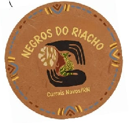

Negros do Riacho
A Comunidade Quilombola Negros do Riacho está localizada em Currais Novos, Rio Grande do Norte. Descendentes de Trajano Lopes da Silva, a comunidade preserva saberes tradicionais transmitidos entre gerações.
Sua economia combina agricultura de subsistência e produção de louça de barro artesanal, um trabalho que representa identidade e cultura quilombola.
Nossa História
Origem
A comunidade Negros do Riacho tem suas raízes ligadas a Trajano Lopes da Silva, conhecido como Trajano Passarinho. Os descendentes dele formaram o núcleo do grupo, que passou a se identificar como quilombola, mantendo a memória e a ancestralidade como parte de sua identidade.
Desenvolvimento
Com o passar do tempo, a comunidade consolidou práticas agrícolas e expandiu sua produção artesanal. A fabricação de louça de barro se tornou um marco cultural e econômico, transmitida entre gerações como fonte de renda e preservação da tradição.
Tradições
Os saberes são transmitidos oralmente e de forma prática, desde a infância até a vida adulta. A prática do feitiço também aparece na memória coletiva como parte da cultura e da resistência, reforçando a identidade do grupo.
Identidade
Todos no Riacho se consideram parentes. O termo 'parente' não se restringe ao sangue, mas ao pertencimento ao território, fortalecendo os laços comunitários e a solidariedade interna.
Território e Pertecimento
O território do Riacho é símbolo de pertencimento e memória. Viver na mesma terra dos antepassados representa continuidade, união familiar e respeito às origens.
Cultura e Saberes Trandicionais
Os moradores preservam saberes e costumes passados entre gerações, que expressam o orgulho e a força da identidade quilombola.
Organização Social-Familiar
A família ampliada é a base da vida comunitária. O parentesco é expandido, e todos são considerados parentes dentro do território. Essa estrutura sustenta alianças internas e o modo de viver coletivo.
Atividades Produtivas
A economia combina agricultura de subsistência com a produção artesanal de louça de barro. A louça, além de gerar renda, simboliza resistência cultural e conexão com a ancestralidade.
LIderança e Poder
A comunidade possui um sistema próprio de liderança, baseado na experiência e no respeito às figuras mais velhas. As decisões coletivas refletem a valorização da memória e da tradição como guias da vida comunitária.
Louça de Barro
Potes Tradicionais
Potes de barro para armazenamento e preparo de alimentos.
Panelas Artesanais
Panelas feitas à mão para cozimento tradicional.
Jarros Decorativos
Jarros ornamentais com técnicas ancestrais.
Miniaturas
Pequenas peças decorativas e utilitárias.
Como são feitos
Cada peça é produzida manualmente. O barro é preparado, modelado e queimado com técnicas passadas de geração em geração, garantindo qualidade e identidade cultural. O processo envolve a coleta do barro, preparação da massa, modelagem das peças, secagem natural e queima em fornos tradicionais.
Nossa Marca
Identidade Visual
Nossa marca representa a conexão entre tradição, natureza e identidade quilombola.
Paleta de Cores
Etiqueta dos Produtos
Design simples e elegante que valoriza a tradição e autenticidade dos produtos.
Galeria de Fotos
Conheça nossa comunidade através das imagens que retratam nossa cultura, tradições e artesanato.
Bibliografia
Os Negros do Riacho - vinte anos depois
Esta obra fundamental de Luiz Assunção representa uma das principais referências acadêmicas sobre a Comunidade Quilombola Negros do Riacho. O livro "Os Negros do Riacho - vinte anos depois" oferece uma análise profunda e detalhada sobre a história, cultura e desenvolvimento da comunidade ao longo de duas décadas.
A pesquisa de Assunção documenta de forma rigorosa os aspectos sociais, econômicos e culturais da comunidade, preservando memórias e tradições que são fundamentais para compreender a identidade quilombola na região de Currais Novos, Rio Grande do Norte.
Este site foi desenvolvido com base nas informações e dados coletados nesta obra, buscando representar fielmente a história e cultura da Comunidade Quilombola Negros do Riacho.
Detalhes da Obra:
- Autor: Luiz Assunção
- Título: Os Negros do Riacho - vinte anos depois
- Área: Antropologia Social / Estudos Quilombolas
- Metodologia: Pesquisa de campo e análise histórica
Nota sobre as Fontes:
Todas as informações históricas, culturais e sociais apresentadas neste site foram baseadas na pesquisa acadêmica de Luiz Assunção, garantindo a veracidade e precisão dos dados apresentados sobre a Comunidade Quilombola Negros do Riacho.